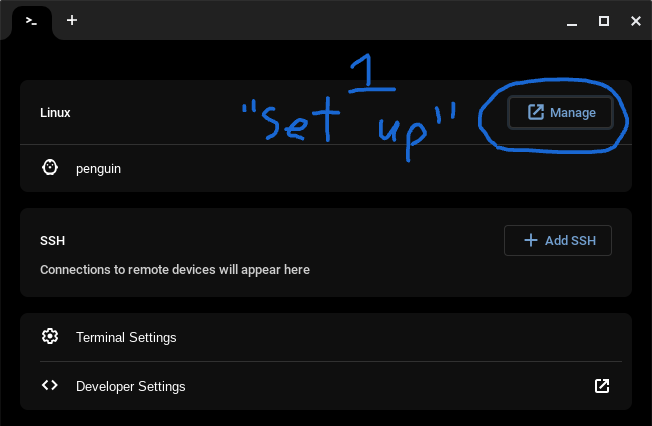
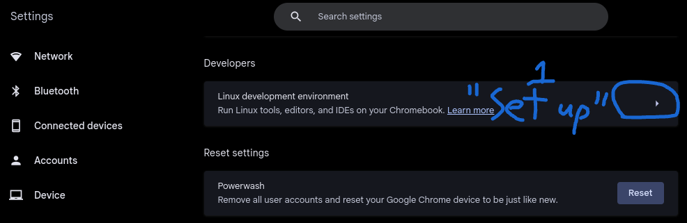

Part 1: Setup Linux Terminal
Step 1: Open the launcher with the search key, then find and open an app called, "terminal".
Step 2: Click on the circled button, it should say, "Set up". If the button says, "Manage" skip to step 4.
Step 3: Click on, "Set up" and during the setup give it a little more than half-way on the slider for storage capacity. You can resize the storage later in the linux terminal settings.
Note: Make sure that you have at least 10GB of storage for the Linux VM. If you don't have the ability set it higher than 10, you need to delete unneccessary apps, photos, and/or videos from your device to free up space.
Step 4: Once it finishes, open the command line by clicking on, "Penguin" in the terminal app.
Step 5: Type in, "sudo apt-get dist-upgrade -y" and press enter.
Tip: To paste commands in to the command line, just right-click.
Part 2: Installing the Flathub Appstore
Step 1: Open the terminal and type in, "sudo apt-get upgrade -y" and press enter.
Step 2: Type in, "sudo apt install flatpak -y" and press enter.
Step 3: To make sure you have the Flathub repository, type in, "flatpak --user remote-add --if-not-exists flathub https://dl.flathub.org/repo/flathub.flatpakrepo"
Note: It is normal for this command to return no results, it changes a setting and checks if you have the right files, if you don’t have the right files it will download and install the correct ones.
Info source: flathub.com
Part 3: Installing the Main Linux Web Browser:
To be able to install and run some apps, Linux needs a web browser. Firefox is the best web browser for Linux, but after you install Firefox you can install other web browsers like Chrome or Edge if you perfer.
Step 1: Open the terminal, and type in, "sudo apt-get upgrade -y" and press enter.
Step 2: Type in, "flatpak install flathub org.mozilla.firefox -y" and press enter.
Step 3: Once it finishes, open the launcher and look for an app called, "Firefox" under, "Linux Apps", the click on it.
Step 4: Right-click on the icon for Firefox and select, "Pin", you will need Firefox frequentally if you plan on installing a lot of Linux apps.
Step 5: Open Firefox, then open a new tab. Click on the cog-shaped settings icon. Then click on, "Manage more settings".

Step 6: Type, "file" into the searchbar. Then enable, "Always ask you where to save files".

Now you should be ready to go, if you want review the secuity settings for Firefox. Also make sure to make it the default browser ❪this is just for the Linux VM, it doesn't affect the Chrome browser that came with your Chromebook❫.